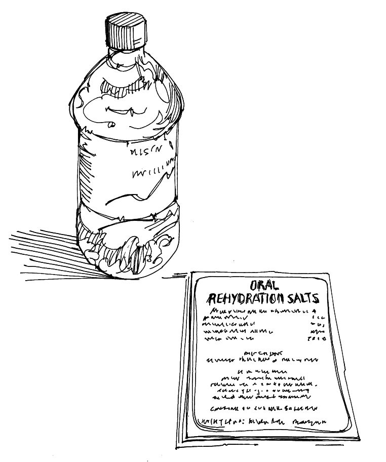

Preparación de solución de rehidratación oral (SRO)
Resumen
La solución de rehidratación oral (SRO) es el primer paso para tratar a las personas que sufren diarrea y deshidratación.
La SRO se puede preparar a partir de paquetes de SRO o en casa a partir de agua, azúcar y sal.
Lo que necesita saber
La SRO viene en pequeños paquetes en forma de polvo. Necesita ser diluida antes de su uso.
Los paquetes de SRO se pueden obtener en su filial local de la Sociedad Nacional, en un centro de salud o en el punto de rehidratación oral de la comunidad (consulte la Herramienta de acción 8 ).
Siga las instrucciones en el paquete para averiguar cuánta agua se necesita para diluir el contenido de cada paquete.
Siempre use agua limpia para diluir la SRO (vea la Herramienta de acción 30 ).
Preparación y administración de SRO
Lave sus manos con jabón y agua limpia.
Vierta todo el polvo de un sobre de SRO en un recipiente limpio que pueda contener al menos un litro de líquido.
Vierta un litro (o la cantidad indicada en las instrucciones) de lagua más limpia disponible en el recipiente y mezcle con el polvo.
Dé al paciente sorbos frecuentes de una taza o cuchara hasta que esté ya no tenga sed (una cuchara es especialmente adecuada para niños pequeños.).
Si el paciente vomita, informe a la persona que este proporcionando atención y espere diez minutos antes de dar más.
Puede agregar media taza de jugo de naranja o una banana majada a la solución para que sepa mejor.
Si aún se necesita SRO después de 24 horas, mezcle una solución nueva.
Si el paciente no mejora o aparecen signos de deshidratación severa lleve al paciente a una clínica de salud.
SRO en casa
Algunos remedios tradicionales pueden ser una SRO eficaz y pueden evitar que el niño pierda demasiado líquido a causa de la diarrea. Informar a los cuidadores sobre los remedios tradicionales eficaces si no se dispone de paquetes de SRO y el centro de salud es inaccesible.
Los remedios tradicionales incluyen: leche materna, papilla (cereales cocidos diluidos con agua), sopa de zanahoria y agua de arroz.
Una solución muy simple y efectiva para rehidratar a un niño puede mezclarse con sal, azúcar y agua (vea la ilustración a continuación).
Una solución casera de sal y azúcar solo debe usarse cuando los paquetes de SRO no están disponibles.
Si se usa una solución de azúcar y sal hecha en casa, debe enseñar a los que cuidan para que preparen la solución en forma segura y correcta. Necesitan evitar errores en la mezcla de ingredientes. También es importante utilizar el agua más limpia disponible.
Puede agregar media taza de jugo de naranja o una banana majada a la solución para que tenga mejor sabor.
Solución casera de azúcar y sal
Lave sus manos con agua y jabón antes de preparar la solución.
En un recipiente limpio mezcle:
1 litro de agua potable.
Media cucharadita de sal (3.5 gramos).
Cuatro cucharadas grandes (u ocho cucharadas pequeñas) de azúcar (40 gramos).
Revuelva la sal y el azúcar hasta que se disuelvan en el agua.
Dé al paciente sorbos frecuentes de una taza o una cuchara hasta que ya no tenga sed. (Las cucharadas son especialmente apropiadas para los niños jóvenes).
Si el paciente vomita, informe al cuidador y espere diez minutos antes de dar más.
Puede agregar media taza de jugo de naranja o una banana majada a la solución para que sepa mejor.
Si aún se necesita SRO después de 24 horas, mezcle una solución nueva.
Si el paciente no mejora o presenta signos de deshidratación severa, lleva al paciente a una clínica de salud.

Preparación de una solución de rehidratación oral
SRO en casa
Algunos remedios tradicionales pueden ser una SRO eficaz y pueden evitar que el niño pierda demasiado líquido a causa de la diarrea. Informar a los cuidadores sobre los remedios tradicionales eficaces si no se dispone de paquetes de SRO y el centro de salud es inaccesible.
Los remedios tradicionales incluyen: leche materna, papilla (cereales cocidos diluidos con agua), sopa de zanahoria y agua de arroz.
Una solución muy simple y efectiva para rehidratar a un niño puede mezclarse con sal, azúcar y agua (vea la ilustración a continuación).
Una solución casera de sal y azúcar solo debe usarse cuando los paquetes de SRO no están disponibles.
Si se usa una solución de azúcar y sal hecha en casa, debe enseñar a los que cuidan para que preparen la solución en forma segura y correcta. Necesitan evitar errores en la mezcla de ingredientes. También es importante utilizar el agua más limpia disponible.
Puede agregar media taza de jugo de naranja o una banana majada a la solución para que tenga mejor sabor.
Herramientas para mensajes comunitarios
Vea los siguientes mensajes de la comunidad para apoyar preparación de solución de rehidratación oral (sro):